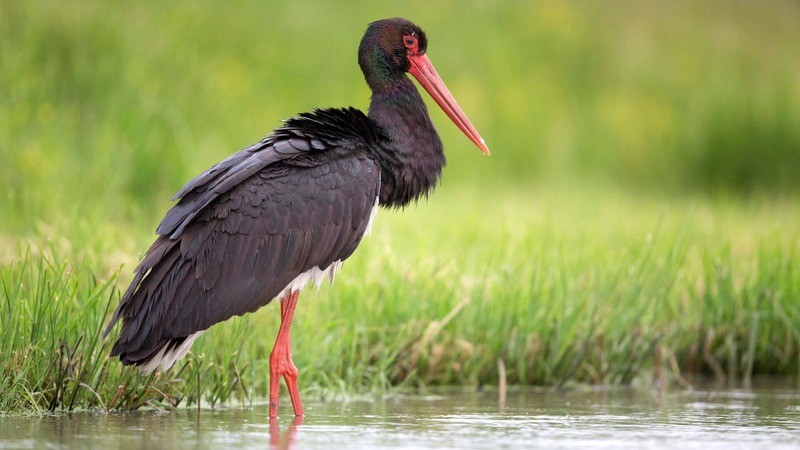

Описание

Черный аист Ciconia nigra – уникальный вид, принадлежащий к семейству Аистовых. Красная книга отнесла птицу в категорию, вызывающую наименьшие опасения. Тем не менее, птица охраняется в России, Украине, Казахстане, Болгарии и других странах.
Белые и черные аисты имеют практически одинаковые размеры. Длина тела достигает 1 м, вес колеблется в пределах 2,7-3 кг. Размах крыльев взрослых особей достигает 1,5-2 м.
Как выглядит черный аист:
- Окрас самок и самцов не отличается. Преобладает черный и металлический блеск. Иногда окрас дополнен бронзовым, фиолетовым или зеленым оттенками.
- Нижняя часть крыльев и брюхо белого цвета.
- У пернатого красный клюв, неоперенная кожа возле глаз и ноги.
Молодняк отличается: бурым окрасом без металлического отлива, голые участки на голове серо-зеленые. У птенцов клюв и ноги не красные, а серые.
Местообитание
Ареал вида большой: начинается от Восточной Европы, заканчивается Китаем и Кореей. Небольшое количество особей сосредоточено на Дальнем Востоке. Гнезда аистов обнаружены на турецкой территории, Иране и Закавказье.
Основное место обитания – глухие старые леса, локализованы на равнинных участках. Вид также встречается в предгорьях неподалеку от водоемов.
Хищные птицы обитают в пределах:
Особи в горах поднимаются до уровня 2 тыс. м. Перелетная птица зимует в тропиках. Она выбирает для себя комфортные районы Африки и Азии. Особи прилетают на место гнездования в марте-апреле, обратно «выдвигаются» в начале осени.
Особенности питания
Кормятся самки и самцы на мелководье, заливных лугах, болотах. Они находят пищу возле водоемов.
Чем питается черный аист:
- рыбой
- лягушками
- моллюсками
- ящерицами
- змеями
- грызунами
Зимой корм становится менее разнообразным. Птица ловит крупных насекомых, беспозвоночных. Особь за кормом пролетает 5-10 км. Она оставляет гнездо, чтобы найти пропитание. Максимальное расстояние от гнезда в поисках добычи достигает 15 км.
Статус животного
- Аистовые
- Царство: Животные
- Тип/отдел: Хордовые
- Класс: Птицы
- Отряд/порядок: Аистообразные
- Семейство: Аистовые
- Категория редкости: 3 - редкие
- Красный список МСОП: Нет